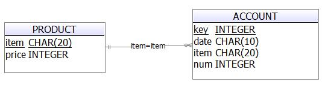

スキーマ
データベースに接続する
db = h5.api.sqldb.open('hcdb', '1', 'hcdb', 2 * 1024 * 1024);
h5.api.sqldb.openを使ってローカル領域のデータベースへ接続します。 戻り値はDatabaseWrapperオブジェクトです。
トランザクション
var promise = db.transaction().add(db.select()...).add(db.insert()...)
.add(db.update()...).add(db.del()...).add(db.sql()...).execute();
promise.done(function(){
// トランザクション正常終了時に行う処理
}).fail(function(error){
// トランザクション異常終了時に行う処理
});
db.transaction()にトランザクション内で行いたい処理をadd()を使って渡し、execute()メソッドでトランザクションを実行します。 このメソッドは非同期で実行され、promiseオブジェクトを返します。 トランザクションが成功/失敗すると、done()/fail()に登録された関数が実行されます。
transaction実行中にエラーが発生した場合は、自動でロールバックされます。
sql(), select(), insert(), del(), update()は単独でも実行できます。db.sql().execute()のようにして実行し、transaction()と同様にpromiseオブジェクトを返します。 各メソッドの使い方はこのページでも解説しますが、詳細はTransaction(APIドキュメント)をご覧ください。
sql()
サンプルアプリで使用しているテーブルを作成するソースコードの解説をします。
データベースの操作は基本的にロジック内で行います。
var dfd = h5.async.deferred();
var promise = db.sql(
'CREATE TABLE PRODUCT ('
+ 'item CHAR(20) NOT NULL'
+ ', price INTEGER NOT NULL'
+ ', CONSTRAINT PK_PRODUCT PRIMARY KEY (item));')).execute();
promise.fail(function(err) {
dfd.reject(err);
}).done(function() {
dfd.resolve('データベースにテーブル"PRODUCT"を新規作成しました。');
});
return dfd.promise();
PRODUCTテーブルを作成するロジック内の関数です。db.sql()でSQLを実行しています。
sql()はpromiseオブジェクトを返します。クエリの実行に成功/失敗すると、done()/fail()に登録された関数が実行されます。
失敗した場合はfail内の関数にSQLErrorオブジェクトが渡されます。
成功した場合はdone内の関数にSQLResultSetオブジェクトが渡されます。 この例ではCRETE文なので結果は空ですが、SELECT文やUPDATE文を実行すると結果が格納されたSQLResultSetオブジェクトが渡されます。
select()
var dfd = h5.async.deferred();
db.select('PRODUCT', '*').orderBy('item').execute().done(function(rows) {
var resultArray = [];
for ( var i = 0, len = rows.length; i < len; i++) {
resultArray.push({
item: rows.item(i)['item'],
price: rows.item(i)['price'],
});
}
dfd.resolve(resultArray);
}).fail(function(err) {
dfd.reject(err);
});
});
sql()でSELECT文を記述して実行することもできますが、単純なSELECT文であればselect()使って実行することができます。 第一引数に取得するテーブル名、第二引数に取得するカラム名を指定します。第二引数はカラム名の配列または'*'で指定します。
ORDER BY句はorderBy()で設定できます。詳しくはSelect#orderByをご覧ください。
またWHERE句をwhere()で設定できます。詳しくはSelect#whereをご覧ください。
処理が成功すると、done()内の関数にSQLResultSetRowListオブジェクトが引数に渡されます。 この例ではSELECTの実行結果を取り出し、配列に格納して呼び出し元に返しています。
select()では実行できないようなSELECT文を使うには、sql()を使ってSELECT文を記述して実行します。 以下は、買い物履歴を取得するソースコードです。
db.sql(
'SELECT date, ACCOUNT.item, num, (num * price) as total, key'
+ ' FROM ACCOUNT LEFT OUTER JOIN PRODUCT'
+ ' ON ACCOUNT.item = PRODUCT.item'
+ ' ORDER BY date DESC').execute()
.done(function(rs) {
var resultArray = [];
for ( var i = 0, len = rs.rows.length; i < len; i++) {
resultArray.push({
date: rs.rows.item(i)['date'],
item: rs.rows.item(i)['item'],
num: rs.rows.item(i)['num'],
total: rs.rows.item(i)['total'],
key: rs.rows.item(i)['key']
});
}
dfd.resolve(resultArray);
}).fail(function(err) {
dfd.reject(err);
});
INSERT
var dfd = h5.async.deferred();
db.insert('PRODUCT').where({
item: item,
price: price
}).execute().done(function(rs) { // 第一引数: 登録したレコードのROWIDの配列
dfd.resolve();
})
.fail(function(err) {
dfd.reject(err);
});
単純なINSERT文はinsert()を使って実行することができます。登録したいデータをオブジェクトに格納して引数に渡します。 doneに指定したコールバック関数には、登録されたレコードのROWIDが配列で格納されます。
UPDATE
var dfd = h5.async.deferred();
db.update('ACCOUNT', dataObj).where({
'key =': dataObj.key
}).execute().done(function() {
dfd.resolve();
}).fail(function(err) {
dfd.reject(err);
});
});
単純なUPDATE文はupdate()を使って実行することができます。テーブル名と、更新したいデータを格納したオブジェクトを引数に渡します。
WHERE句はwhere()で設定できます。このWHERE句の指定方法はselect文と同様です。詳しくはUpdate#whereをご覧ください。
DELETE
var dfd = h5.async.deferred();
db.del('PRODUCT').where({
'item =': item
}).execute().done(function() {
dfd.resolve();
}).fail(function(err) {
dfd.reject(err);
});
});
単純なDELETE文はdel()を使って実行することができます。 WHERE句はwhere()で設定できます。このWHERE句の指定方法はselect文と同様です。詳しくはDel#whereをご覧ください。
DROP文とロールバック
テーブルの削除とロールバックについて説明します。
var dfd = h5.async.deferred();
db.sql('DROP TABLE ACCOUNT').execute().progress(function(rs,tx) {
dfd.notify('ACCOUNTテーブルを削除しました。');
// sql()にトランザクションオブジェクトtxを渡して、トランザクションを引き継ぐことができる。
db.sql('DROP TABLE PRODUCT', [], tx).execute().progress(function(rs,tx){
dfd.notify('PRODUCTテーブルを削除しました。');
})
}).done(function() {
dump('トランザクション成功：テーブルは２つとも削除されました。');
dfd.resolve();
}).fail(function(err) {
dump('トランザクション失敗：テーブルは２つとも削除されていません。');
dfd.reject(err);
});
dfd.progress(function(msg) {
dump(msg);
});
テーブルの削除(DROP)はsql()にSQL文を渡して実行します。
sql(), select(), insert(), del(), update()の、progress()に指定したコールバック関数の第二引数には、トランザクションオブジェクトが格納され、 このオブジェクトを使用することで、トランザクションを引き継ぐことができます。 この例では、ACCOUNTテーブルのDROP文を実行するトランザクションで、PRODUCTテーブルのDROP文を実行します。
トランザクション内でエラーが発生すると、その同一トランザクション内の処理は自動的にロールバックされ、fail()コールバックが実行されます。 この例では、トランザクション終了時には２つとも削除された状態か、ロールバックされてどちらも削除されていない状態のどちらかになります。